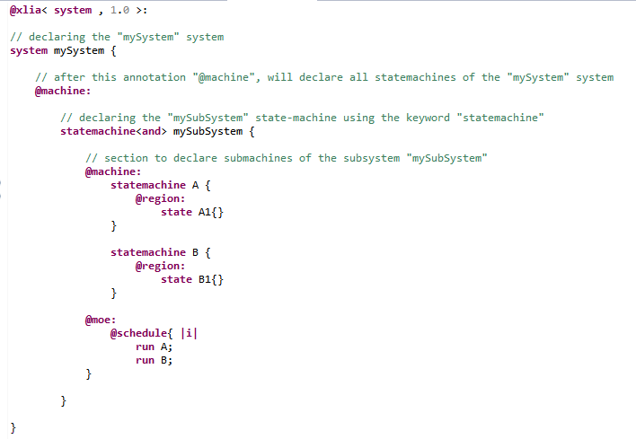
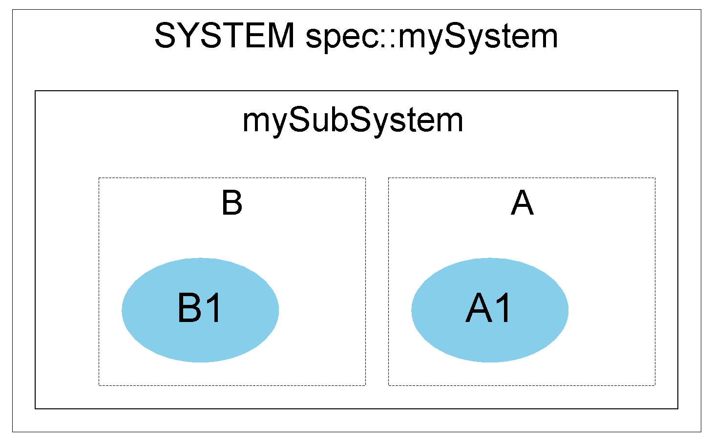

This kind of statemachine models a system within a system. The submachines of a subsytem are of type "statemachine". Most of what we've said about systems can be used here :
Those sub-submachines evolve in parallel. Therefore, the statemachine is declared with a "moc" either "and" or "xand".
See scheduling for the notion of "scheduling".
Difference between "and" and "xand" :
To specify the scheduling we use the "@schedule{...}" action primitive which is inside the "@moe:" section. For instance :
From the code above we can generate the following statemachines graph :
